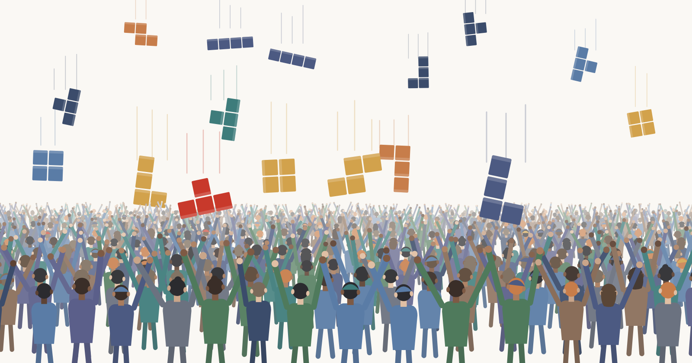

Foreword to Part III
This is the third of three parts; in the first we identified the origins, in the second we looked at how coaching grew from an idea to an established profession. In this final part we look at how the coaching landscape is transforming, particularly among Millennials (born between 1981 and 1996) and Zoomers (born between 1997 and 2012). While the first 2 parts are largely based in historical fact, this 3rd part attempts to identify trends and understand the forces that are reshaping the value that a coach provides.
What is largely coming into view, today, is the changing generational contexts, and the replacement of those social and economic conditions that brought the unique form of coaching into existence.
← Read Part I · ← Read Part II
#9 The new reality and the new modalities
Younger generations are pursuing growth and development in a big way, arguably in a broader and more fundamental way. Much that used to be provided by a coach, however, now happens outside the one-on-one coaching relationship. While this does not question the value of anyone calling themselves a coach, it does ask what's relevant — and gets prioritised — in the context of the younger generations.
Here are 6 realities and trends that are influencing the relevance of a coach and how Millennials and Zoomers are accessing the knowledge and insights that were traditionally provided by a coach.
1. Job insecurity is the baselineMillennials and Zoomers never expected or relied on a managed corporate career. Job tenure has trended down, and non-standard arrangements — 'gigs' — are normal for many who are newly entering the workforce. In this way, the coach who supports the client to author his career is less relevant than he was in the 80s. While most Boomers expected the opportunity of lifelong employment, the younger generations never did — and the idea of self-authorship is not a revelation that a coach delivers. The premise that "you can author your own career" is now common knowledge.
2. Developmental knowledge is abundant and freeFrameworks, expert thinking and worked examples for nearly every profession, skill or subject matter are freely available through podcasts, newsletters, online communities and apps. The older generations had access to traditional (linear) broadcasting, libraries, mailed subscriptions, bookstores, and newsstands. This required defining the needed information, identifying the source and creating a plan to get possession of it. The lack of information, and its proprietary nature, meant expertise had to be methodically developed over time, through effort and resourcefulness. These barriers never existed for Millennials and Zoomers; free and immediate availability of information means they learned to self-educate from a young age, and are less likely to seek an expert partner.
3. Trust is built on demonstrated work, not on credentialsPeople select based on a specific person's thinking, and getting familiar with that thinking is done through a visible, sustained public track record. They develop trust through what they are able to see and discern for themselves. Having a readily available pool of presentations, lessons and interviews, accessible through diverse online sources, is the medium through which this trust is developed. The institutional credential is displaced by demonstrated work.
4. AI as the first stopLarge language models accelerate access to information even further. A wealth of filtered and organised information is available through a prompt, and this is the instant and effortless first stop for any routine reflection, providing a summary orientation around any subject matter. When intellectual or emotional gratification is instant, even highly organised information becomes commoditised, and the more information we are exposed to, the less time we spend contemplating and absorbing what we've read.
5. Accessibility of common-interest cohorts and networksThe internet serves as a matchmaker for common interests, and online groups serve as the developmental unit that used to be dominated by the expert. Knowledge and candour, within the safe space of a cohort, substitute for the one-on-one relationship of client and coach. The results are less predictable, but the relevance of this new medium is real.
6. Academic and professional vocabulary has become mainstreamDomain-specific vocabulary, extending to words used in mental health and therapy, has become mainstream among the younger generations. Words and their underlying disciplines are learned and applied superficially, losing much of their integrity and power along with their true meaning. A novice and an experienced professional may use the same words, but these words would carry less meaning for the former, while being instrumental to the latter.
The above points represent symptoms of a shifting reality, and describe a competitive playing field of evolving modalities, one that is both resource rich and noisy at the same time, and one in which anyone who is a coach is having to orient himself.
#10 The emerging patterns and what's causing them
Understanding the preferences and habits of the younger generations can be challenging to anyone who remembers a time without the internet and mobile devices. While Baby Boomers and Gen X both understand and use the internet, they graduated into that environment, and they witnessed its birth from the point of origin of a world that had no internet. They came from a mindset that predated its existence and progressively adapted to it.
It is one thing to learn of something as an innovation, and it's another thing entirely to have grown up with it being an everyday reality. Said another way, while we allow ourselves to be fully reliant on the technologies that have 'always existed', should we have grown up in a world without them, we would have learned to think and to choose differently. A comparative example that sheds some light on this is learning a new language. When we learn a new language we are also learning the culture of the people who speak it; while we may speak and learn to communicate in it, we are grounded in the meanings and nuances of our native language; the way in which we speak this second language will differ fundamentally from the native speaker, whose thoughts and feelings are integral to it.
So how might we understand the fundamental differences of how Boomers and Gen X relate to a coach, relative to how Millennials and Zoomers do? Information scarcity never existed for the younger generations. While the older generations made a habit of seeking out experts and placing a premium on the knowledge they provided, the younger were able to access the best thinkers in any field of work at the stroke of a few keys. They never experienced the lack of access to information that might have created for them the habit of seeking out experts.
In 2026 we have moved even further. Today, the first thing we reach for is an AI prompt. Routine reflection starts with this always-on model that gives us a highly articulated reply to our question. Whatever we may choose to discuss with another person will already be primed through what we have learned in this way. From there, the path of least resistance takes us to an audience-anchored practitioner, who shares his knowledge and insights through a recorded presentation or discussion. His trust has been pre-earned through public work, and its extent can be judged through the number of times his videos have been watched and the number of people who follow or subscribe to his channels.
Moving on from there, if the thirst for knowledge has not been quenched, one might seek out an in-person conversation. But even at this stage, one may prioritise a digital 'community'. The chosen relationship then becomes a facilitated peer group; it could also be a blend of a one-on-one relationship, material that's pre-recorded by the audience-anchored practitioner, and the 'community' that he anchors and moderates.
While these new modalities do not signal the end of coaching, they do change something fundamental about how a coach is regarded, and how a client would evaluate the need for one. These modalities address the more routine and informational middle of the market, where ease of access makes it the default priority. The ease of access also makes a commodity out of the middle of the market.
The need that the commodity does not serve is the high-stakes and identity-level work. For a leader in a genuine crisis, the confidential room and the trusted relationship is the key differentiator. In this working context, clarity is achieved for unique situations that demand dedicated attention. This is the high-stakes, identity-level work that resists commoditisation, and for which a confidential and trusted relationship is still the only real solution.
#11 How choosing a coach evolves
So while the high-value aspects of being a coach stand unchallenged, the situation in which he is truly needed is being redefined. And while the newly emerged modalities address some aspects of what coaching provides, it is up to each individual to discover that value for themselves. These modalities do not provide any measure of understanding or of tuning into the individual's unique situation; they are simply an interface and channel to knowledge, through which anyone willing can attempt to extract ideas that can support them with their own unique situation.

Given the unruly confluence of options, we are faced with some weighty decisions. How does a person who is considering hiring a coach explore and weigh his options? And how does a coach position himself competitively and penetrate the noise to connect with his client base? While there are no hard-and-fast guidelines, there are a few needs that would prioritise working with a professional coach:
- The perennial need is still that of a trusted mind to think with, someone outside of our situation whom we trust and who can guide us towards seeing things more clearly. That need is stable, and if anything it intensifies as the world gets noisier.
- There is the need for navigating one's career and for exploring the opportunities of one's own identity — while that need has evolved since the 70s, its relevance is greater than ever in today's fast-paced and ever-changing world.
- Then there is the need to be understood from the perspective of one's own inner world, the human desire to find a safe place to express those thoughts and feelings that need to remain private, but that can only be resolved through a conversation with someone who is trusted, and who has the experience and the intention to put themselves in your shoes.
There is a fourth consideration that deserves its separate mention. While the above needs are discernible to the prospective client, there are also needs he is blind to. Said another way, there are things we can self-assess, and there are those that we are likely to overlook. It is these less comfortable truths that frequently hold the key to the questions about life that we are trying to answer. While they cannot be pre-assessed by the client — due to his being blind to them — unveiling something we have been blind to often reveals areas of unconscious avoidance and self-sabotaging behaviours, which obstruct the paths to the most meaningful and productive behavioural changes.
While access to knowledge from online sources outlines possibilities and frames opportunities for action, it is less likely to perform where coaching still makes the greatest difference. It is in response to these seminal needs that a coach stands to make his greatest contribution, and it is for this reason that finding a trusted individual to work with protects the greatest realisable opportunity.
The current trends will continue to evolve, bringing valuable changes and great opportunities. It will be interesting to see how the present reality unfolds, and how markets develop through the later years of the Millennial and Zoomer generations. In the meantime we will be exposed to a continuous stream of learning and development initiatives that are reaching forward into the future.